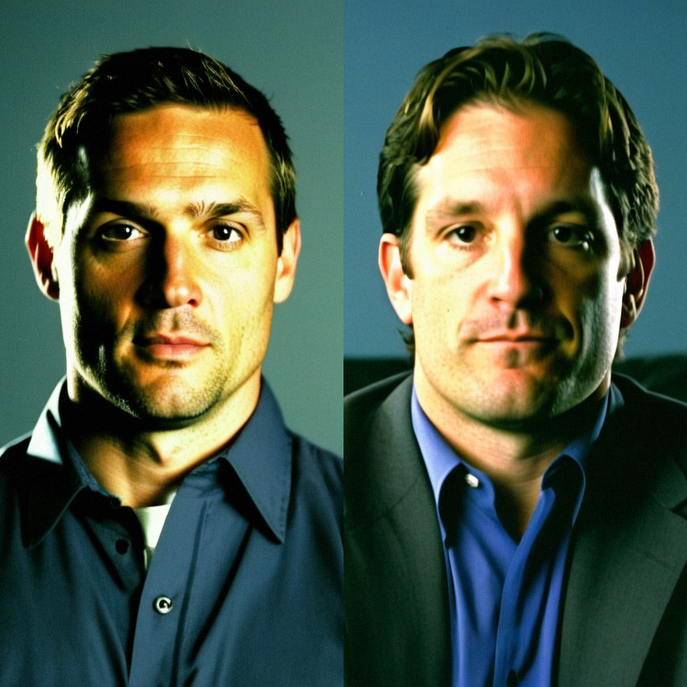

Yzerman and Shanahan: two chairs, one room, sixty-one years between them
The captain watches from the press box with a shoulder that will not let him play until late January, and the newcomer says the oldest room in the league feels exactly like what it sounds like.
 Marcus BellRinkside reporter · The Tunnel
Marcus BellRinkside reporter · The Tunnel
7:25 · synthetic voices, produced from the record · download
 Steve Yzerman79 has 13 games, 5 goals and 20 points for
Steve Yzerman79 has 13 games, 5 goals and 20 points for  Detroit Red Wings before a shoulder injury landed him on the shelf, with a return date of January 25.
Detroit Red Wings before a shoulder injury landed him on the shelf, with a return date of January 25.  Brendan Shanahan81 arrived in Detroit on December 1 after 26 games elsewhere this season, and the two men have exactly one week of sharing a line.
Brendan Shanahan81 arrived in Detroit on December 1 after 26 games elsewhere this season, and the two men have exactly one week of sharing a line.
Transcript
Marcus Bell here, studio desk, and I've got Steve Yzerman and Brendan Shanahan in front of me. Steve, you're 39, and Brendan, you're sitting one week into a new locker room. I'm going to start with the obvious question for both of you: how does it feel to walk into a room that averages almost 31 years old?
Well, you know, I've been in that room for, what, twenty-one years now. So the number doesn't really hit me anymore. I just look around and see guys I've been playing against since I was in junior.
And I look around and see guys I was playing against when I was eighteen. No, but seriously, it's, uh, it's different. I've been here a week. The first practice I was looking at the lineup card and half the names I knew from, you know, trying to figure out how to guard them on the other side.
Steve, you've said before that the Detroit room is a family. Is it still a family when the oldest kid is thirty-nine and the youngest, what, twenty?
It's a family, sure. But I don't know if that's, you know, the right word for it anymore. A family implies everybody's related. This is, what, eleven guys over thirty-three in here. It's more like, I dunno, a support group maybe. We're all in the same boat.
Steve's being polite. I'll be blunt. I walked in here and the first thing I noticed was the ice at practice felt, I don't know, slower. Not because the guys can't skate, because they can. But there's a, you know, a patience to it. Nobody's burning themselves out in the first ten minutes. Took me three days to figure that out.
Brendan, you came here with 137 points last season. That's not a small number. What did you see in this room that made you want to be part of it?
I didn't really get to choose, you know? The trade happens, you pack your bags, you go where they tell you to go. But, uh, looking at it from the outside, you see Nicklas and you see Steve and you see Dery and you think, this group still knows how to win. I've been on teams that forgot how.
You've been around the block, Brendan. New Jersey, St. Louis, Hartford, and now Detroit. Does this one feel like the last stop?
I got three years left on the deal. I don't know if it's the last stop. But I'll tell you this, it's the first time I've walked into a room where I didn't have to figure out who everybody was and what their habits were. Steve's been here his whole career. That, you know, that's a different kind of comfort. I'm jealous of it honestly.
You shouldn't be. Twenty-one years is a long time to be in one building. You see the same walls every day. You know where the ice melts in February. It's a comfort, sure, but it's also, you know, it's a thing you carry. Every year that doesn't end the way you want, it gets heavier.
Steve, let's talk about the shoulder. You've been out since the first of December, you've got thirteen games, 5 goals, 20 points. When does that come back?
January 25. That's what they've told me. January 25. And you know, I'm, I'm thirty-nine, so every day it's a little longer before it feels right. But I'm not going anywhere. I'll be back.
He calls me every other day. Every. Other. Day. And he asks me how the ice feels, like I'm, what, some kind of expert on Detroit's ice. I've been here a week!
And you tell me the same thing every time. 'It's fine, it's slow, the first ten minutes are tough.' I know the ice, Brendan. I'm asking about your legs.
Brendan, you've got 26 games in, 36 points. Last year you had 137 in 69 games. Are you looking at that number and thinking this year's pace isn't the same?
I'm 35 years old. You know what, I don't, I don't look at last year. I mean, 137, that was, that was a season. You don't get those every year. I'm here, I'm playing, the team's, you know, we're finding it out. That's enough for me right now.
Steve, 7.5 million dollars on the contract, two years left. At 39, does that weight change the way you think about the next two years?
You know what, the money's the money. I've got a job to do. I'm playing centre on a team that's trying to win. The number doesn't change what happens out there. If anything it just means people talk about it more than it matters.
Can I jump in? I got 6.5, I got three years. And Steve, with respect, when you've been here twenty-one years and you're the captain and you're thirty-nine, people talk about your money because it's a story. They talk about mine because they want to know if I'm going to hold it against them. You know? The room gets weird when people start counting the payroll in the locker room.
That's fair. And the room does get weird. That's why you don't bring it up. That's why we don't, you know, we don't talk about the contracts in here. You play, the money works out. That's always been how it's been in this building.
Brendan, you came to this team knowing Steve. You've played against him for, what, seventeen seasons. What's it like to finally be on the same sheet?
It's, it's strange. You know how you get a feel for a guy you've been guarding your whole career? I've been trying to shut him down since I was, what, nineteen, twenty? And now he's on my team and the first time he put a pass on my tape in practice I almost looked up to see who was covering him. Took a few shifts to get over it.
He told me that. He told me he looked up expecting to see his own man on me. I laughed so hard. And then, you know, we started clicking. He opens up, he comes hard to the net, he doesn't need the puck all that much to be dangerous. He's just, you know, he's just there and he's there at the right time.
The room's got eleven guys over 33. That's the oldest in the league by a mile. Is that a problem? Are you guys too old to run with the young clubs?
Look, I've been asked that since I was, I don't know, twenty-two. They said we were too old in '95, they said it in '96, they said it in '97. We won in '97. Age is a number that makes a good headline. It doesn't tell you if a guy's going to beat you to the puck at seven o'clock in a third period.
And I'll add something to that. Yeah, we're old. But I'm sitting here in a room where everybody knows their role. I walked into rooms before where we had kids who didn't know what they were supposed to do. Steve knows exactly where he's going to be on every faceoff. Dery knows exactly how he's going to clear the crease. That's worth more than legs. Most nights.
Steve, January 25. That's seven weeks from now. What are you doing in the meantime?
I'm sitting. I'm watching. I'm talking to the trainers every day. I'm trying to stay in shape without, you know, putting the shoulder through anything that's going to set me back. And I'm watching this group figure it out. Brendan's got ten days, maybe two weeks, of us. He's already seeing it, the way we play, the way we set up. He'll be a different player in February than he is tonight.
He said that to me actually. He said, 'give it six weeks, you'll feel like you've been here a year.' And I said, Steve, I don't have time to feel like I've been here a year. I've got a contract to justify. But he's right. I do feel, I already feel less out of place than I did Monday.
Brendan, you're 35, Steve you're 39. You got eleven years between you. Is there a night where you look at each other on the bench and one of you says, we're getting too old for this?
Every morning. No, but honestly? The nights we play well, you don't feel the age. It's the mornings after a bad one. You wake up and the shoulder aches, the back aches, and you think, why am I doing this again? And then you put the skates on and the question goes away.
Steve makes it sound like therapy. For me it's simpler. I look at the calendar. Three more years. I want three more good years. That's it. I don't need the world to know I'm still here. I just want to play well and let the room carry me.
Brendan, you started in '87, Steve you started in '83. You've both been in this league through its whole modern shape. When you look at the young clubs, the teams with guys like Lecavalier and Kovalchuk, do you feel like you're watching the league move on without you?
Vinny's 24. Ilya's 21. They're the league now, that's just, you know, that's how it works. I was them once. The difference is I'm still here and they're still learning. You watch, you learn, you figure out who you are. They'll be fine. And we'll be fine. The game doesn't get smaller because the average age went up. It just gets, I don't know, it gets more, you know, it gets more honest. Everybody out there knows exactly what they are now.
I like that. More honest. Yeah, that's it. You know who you are in this room. Nobody's pretending. Nobody's saying 'I'm going to score 50 this year' when we all know, you know what we've got. And there's, there's a freedom in it. I like that about this place.
Steve, last question. January 25. You come back, you're 39 and four months. What does that first shift feel like?
I don't know. I've been thinking about it a lot. The shoulder will be there, it'll be in the back of my head, you know. I won't throw a check I'd normally throw. Maybe I won't take one. But the first shift, I think, I'll just want to feel the ice again. The rest, the rest comes after.
Gentlemen, thank you both. Steve Yzerman, Brendan Shanahan, sitting on the same side of the table for the first time. Marcus Bell at the studio desk, back to you.